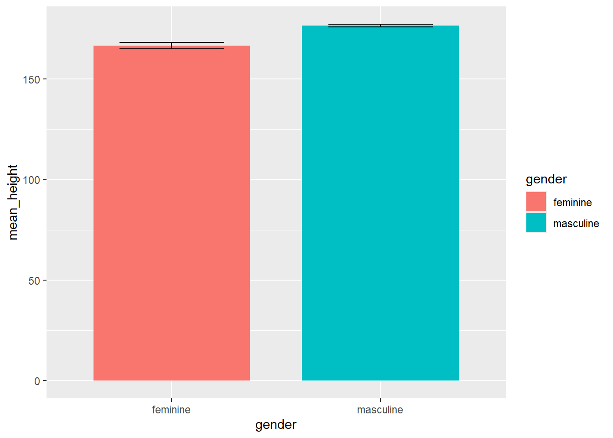
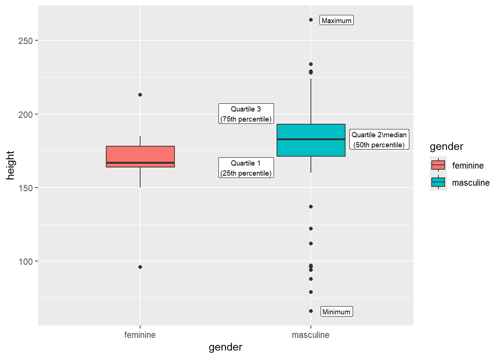
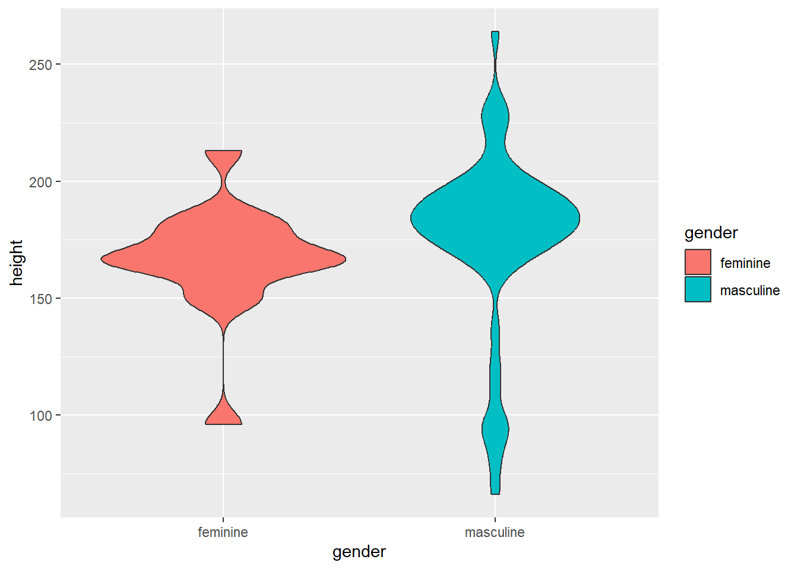

install.packages("tidyverse")
library(tidyverse) 3 An introduction to graphics with ggplot2
3.1 Installing packages
In this chapter, we will again load tidyverse package, which contains the ggplot2 function which we will use for plotting.
3.2 Building up a ggplot
ggplot works in layers. You first call an empty plot, and then you simply add graphics on top.
dplyr::starwars %>%
dplyr::filter(species == "Human") %>%
ggplot2::ggplot(mapping = aes(x = height, y = mass, colour = name)) +
ggplot2::geom_point()
Let’s walk through the above:
dplyr::starwars %>%- calls the starwars data and moves it along with the pipedplyr::filter(species == "Human") %>%- filters on only human charactersggplot2::ggplot(mapping = aes(x = height, y = mass, colour = name)) +- calls an empty ggplot and maps theheightvariable to the x axis,massto the y axis and colour toname, meaning that the colour of plot objects (e.g., lines, points, etc) will vary by the character names. Note that mapping variables usingaes()(for “aesthetic”) means that the assignments will carry on to subsequent layers, unless we change these.+- using a similar logic to the pipe, we use+withinggplot2to pass plot layers forward for further building. (Note that the pipe doesn’t work withinggplot2, and you will receive error messages if this is substituted for+!)geom_point()- this calls a basic scatterplot, taking on the aesthetics that we set in the first layer.heightandweightare mapped to the correct axes, and we can see a legend showing the colour which has been assigned to each human character.
3.3 Plot types
More information on the myriad plots you can generate with ggplot2 can be found on the package website, but we will summarize those which you will most frequently encounter or wish to use.
3.3.1 Histograms & Density plots
dplyr::starwars %>%
ggplot2::ggplot(aes(x = height)) +
ggplot2::geom_histogram(fill="pink") +
ggplot2::ylab("Frequency")
dplyr::starwars %>%
ggplot2::ggplot(aes(x = height)) +
ggplot2::geom_density(fill="pink") +
ggplot2::ylab("Density")

Histograms and density plots provide information about the distribution of your data. Histograms create ranged bins for the frequency variable (here height) and the height of the bars indicates how many observations fall into a particular bin. Density plots show a smoothed version of the same data, making them particularly informative for continuous data.
3.3.2 Barcharts
dplyr::starwars %>%
dplyr::filter(!is.na(gender) & !is.na(height)) %>%
dplyr::group_by(gender) %>%
dplyr::summarize(mean_height = mean(height, na.rm = T), se_height = sd(height, na.rm = T)/sqrt(n())) %>%
ggplot2::ggplot(aes(x = gender, y = mean_height, fill = gender))+
ggplot2::geom_bar(stat="identity", width = .75) +
ggplot2::geom_errorbar(aes(ymin = mean_height - se_height, ymax = mean_height + se_height),width = .5)

Barcharts show a summary statistic (typically - and in this case - the mean) and should include error or confidence bars around the statistic as an estimate of uncertainty.
You will notice the code above contains some extra steps compared to some of the other plots shown:
dplyr::filter(!is.na(gender) & !is.na(height))- we discussedNAvalues in Note 2.2; we usedplyr::filterto remove characters who have a value ofNAfor eithergenderorheight(i.e., by saying: “keep only characters who do NOT have a value ofNAfor bothgenderandheight”). In this way, we save only characters with complete information on the variables of interest.
dplyr::group_by(gender)- we telldplyrto group characters by the levels ofgenderin the dataset. On its own, this has no apparent effect on the dataset, but it provides instructions for how subsequent operations should be performed.dplyr::summarize(mean_height = mean(height, na.rm = T), se_height = sd(height, na.rm = T)/sqrt(n()))- thedplyr::summarizefunction reduces a dataset to a requested set of summary statistics. This is wheregroup_bycomes into play - because we grouped bygender, summary statistics will now be created per gender grouping. Insidesummarize, we declare the new variablesmean_height(which gives mean height) andse_height(standard error for height) which will be passed on to create the barchart.ggplot2::ggplot(aes(x = gender, y = mean_height, fill = gender))- creates an empty plot, setsgenderas the x variable, and the newly-createdmean_heightvariable as the y variable.ggplot2::geom_bar(stat="identity")- this creates the barchart based on the aesthetics previously supplied. Thestat = "identity"call simply tellsggplot2to create the plot based on the values as they are, without further summarizing or processing.ggplot2::geom_errorbar(aes(ymin = mean_height - se_height, ymax = mean_height + se_height),width = .5)- this draws our errorbars, based on values of mean +/- one standard error. Thewidthargument sets the width of the horizontal “handles”
3.3.3 Boxplots
dplyr::starwars %>%
dplyr::filter(!is.na(gender) & !is.na(height)) %>%
ggplot2::ggplot(aes(x = gender, y = height, fill = gender), na.rm = FALSE)+
ggplot2::geom_boxplot(width = .4) +
ggplot2::geom_label(data = boxlabels, aes(x = horz, y = height, label = labels),inherit.aes = FALSE, size = 2.5)

Boxplots visualize the five-figure summary of a dataset (more on this in ISA), and provide a more informative means of comparing groups than barplots.
3.3.4 Violinplots
dplyr::starwars %>%
dplyr::filter(!is.na(gender) & !is.na(height)) %>%
ggplot2::ggplot(aes(x = gender, y = height, fill = gender), na.rm = FALSE)+
ggplot2::geom_violin()

Violinplots are mirrored-density plots which can sometimes slightly resemble violins. The wider the plot, the greater the number of observations that cluster around particular values of the variable of interest (height). As with boxplots, you gain more information with these than with a barplot, as the full range of the data is shown, along with the density.
3.4 Plotting with additional variables
The examples above featured only two variables, but you will doubtless wish to go further. Let’s imagine you want to look at the influence of gender and species on height. To keep things simple, we will simply create two species categories: human and non-human.
1dplyr::starwars %>%
2 dplyr::filter(!is.na(gender) & !is.na(height)) %>%
3 dplyr::mutate(species_new = case_when(species != "Human" ~ "Non-human",
.default = "Human")) %>%
4 ggplot2::ggplot(aes(x = gender, y = height, fill = species_new), na.rm = FALSE)+
5 ggplot2::geom_boxplot()- 1
-
Take
starwars - 2
-
Filter out
NAvalues forgenderandheight - 3
-
Add a
species_newvariable which assigns every non-human in the dataset a value ofnon-human - 4
-
Build the empty plot, with
genderon the x-axis,heighton the y-axis and fill colour tospecies_new - 5
- Add the boxplot layer

3.5 Summary
In this chapter, we have introduced ggplot2 and several common plot types. For now, we concentrate only on the essentials to get started and leave more advanced customization options until they become necessary. If you are keen to learn more about visualization using ggplot2, you can consult the package website or this book written by the developers.